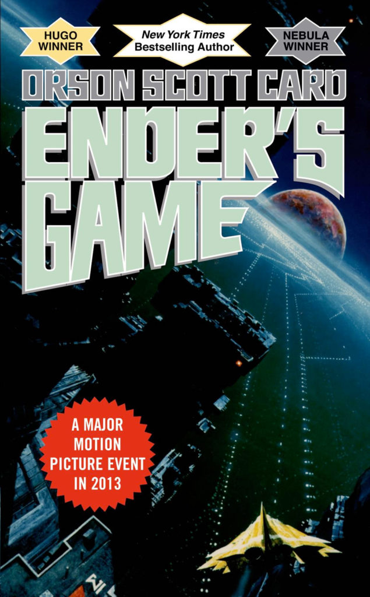

Ender's Game
About
Ender's Game is a 1985 military science fiction novel
by American author Orson Scott Card. Set at an unspecified date in
Earth's future, the novel presents an imperiled humankind after two
conflicts with an insectoid alien species they dub
"the buggers". In preparation for an anticipated third
invasion, Earth's international military force recruits young
children, including the novel's protagonist, Andrew "Ender" Wiggin,
to be trained as elite officers. The children learn military
strategy and leadership by playing increasingly difficult war games,
including some in zero gravity, where Ender's tactical genius is
revealed.
The book originated as a short story of the
same name, published in the August 1977 issue of Analog Science
Fiction and Fact. The novel was published on January 15, 1985.
Later, by elaborating on characters and plotlines depicted in the
novel, Card wrote additional books in the Ender's Game series. Card
released an updated version of Ender's Game in 1991, changing some
political facts to account for the then-recent dissolution of the
Soviet Union and the end of the Cold War. The novel has been
translated into 34 languages. In the movie adaptation and novels
after the original sequels, "buggers" are referred to as
"Formics".
Reception of the book has been largely
positive. It has become suggested reading for military organizations
such as the United States Marine Corps. Ender's Game was recognized
as "best novel" by the 1985 Nebula Award and the 1986 Hugo Award[4]
in the genres of science fiction and fantasy. Its four
sequels—Speaker for the Dead (1986), Xenocide (1991), Children of
the Mind (1996), and Ender in Exile (2008)—follow Ender's subsequent
travels to many different worlds in the galaxy. In addition, the
later novella A War of Gifts (2007) and novel Ender's Shadow (1999),
plus other novels in the Shadow saga, take place during the same
time period as the original.
A film adaptation of the
same name, written for the screen and directed by Gavin Hood, and
starring Asa Butterfield as Ender, was released in October 2013.
Card co-produced the film. The novel has also been adapted into two
comic book series
Accolades
- 1999: Amazon.com - Best of the Century: Best Books of the Millennium Poll
- 1999: Modern Library - Modern Library 100 Best Novels: Reader's List
- 2011: NPR - Top 100 Science Fiction, Fantasy Books: Readers' Poll
- 2012: Locus - Best 20th Century Science Fiction Novels: Reader's Poll
- 2012: Publishers Weekly - Bestselling Science Fiction Novels of 2012
- 2013: Science Channel - Top 10 Sci-fi Books of All Time
The weeks ending June 9, August 11, September 1, September 8, October 27, November 3, November 10, and November 24, 2013, the novel was No. 1 on The New York Times' Best Sellers List of Paperback Mass-Market Fiction.
Adaptations
Film:
After several years of speculation on the possibility, Summit
Entertainment financed and coordinated the development of a film in
2011, serving as its distributor. Gavin Hood directed the film,
which lasts 1 hour and 54 minutes. Filming began in New Orleans,
Louisiana, on February 27, 2012, and was released on November 1,
2013 (USA). A movie preview trailer was released in May 2013 and a
second trailer was released later that year.
Card has
called Ender's Game "unfilmable", "because everything takes
place in Ender's head", and refused to sign a film deal unless he
could ensure that the film was "true to the story". Of the film that
he eventually agreed to, Card said it was "the best that good people
could do with a story they really cared about and believed in", and
while warning fans not to expect a completely faithful adaptation,
called the film "damn good".
The movie starred Asa Butterfield as Ender Wiggin and Harrison Ford
as Colonel Hyrum Graff.
It grossed $125 million worldwide, and received mixed reviews
from critics.
Video Game:
In 2008, it was announced an Ender's Game video game was in the
works. It was to be known as Ender's Game: Battle Room and was a
planned digitally distributed video game for all viable downloadable
platforms. It was under development by Chair Entertainment, which
also developed the Xbox Live Arcade games Undertow and Shadow
Complex. Chair had sold the licensing of Empire to Card, which
became a bestselling novel. Little was revealed about the game, save
its setting in the Ender universe and that it would have focused on
the Battle Room.
In December 2010, it was announced that the video game development
had stopped and the project put on indefinite hold.
Orson Scott Card and Amaze Entertainment also came to an agreement
regarding a video game adaption of the novel but nothing ever
materialized.
Reference and External Link
All information was taken from Wikipedia